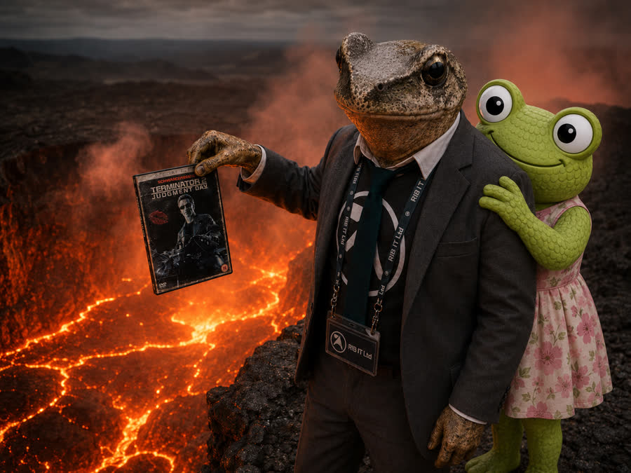

The Picnic, the DVD, and the Volcano
In which I spill coffee on the Terminator 2 DVD, dry it over a volcano, and learn that some things are better left to the professionals.

Mrs Froggy suggested a picnic. A nice one. The kind where you pack a basket with scones and sandwiches and a thermos of something warm, and you find a sunny spot near the old oak tree where the bees are too drowsy to bother you and the only sound is the wind in the barley.
I said yes immediately. Perhaps too immediately. Perhaps with the kind of enthusiasm that should have been a warning sign to both of us.
Mr Froggy was at the office. Working. Something about a spreadsheet that needed auditing and a COBOL job that had gone into an infinite loop at 3AM and was still running when he got in at 7. He'd be there until dinner. Mrs Froggy had the day free. She asked if I wanted company.
I brought the espresso machine. The portable one. The little brass La Pavoni that I've been dialling in for weeks. I thought it would impress her.
It did impress her. Right up until the moment it didn't.
The Setup
We found a spot by the old mill pond — not my pond, the other one, the one with the heron that looks at you like you owe it money. Mrs Froggy laid out a checked blanket and produced a spread that would make a Ginsters pasty blush with inadequacy. Scones with clotted cream and strawberry jam. Cucumber sandwiches with the crusts cut off. A flask of Earl Grey. Little lemon drizzles that she'd baked that morning.
I set up the La Pavoni on a flat rock. Measured the beans. Brought the water to temperature. Pulled a shot that I would, in any other context, have called a triumph. Creamy crema. Golden brown. The kind of espresso that makes you close your eyes and say "proper job" before you've even tasted it.
Mrs Froggy took a sip and said it was lovely. She has kind eyes. She also has a way of saying "lovely" that makes you believe she really means it, even if the espresso was slightly over-extracted because the wind was playing games with my burner.
And then she reached into her bag and pulled out a brown paper package.
"Mr Froggy asked me to give this back to you," she said. "He said you'd know what it means."
I unwrapped it. It was the Terminator 2 DVD. The lent copy. The one with her lipstick imprint on it.
The Incident
I should have put it down. I should have placed it carefully on the blanket, thanked her, and changed the subject. Instead, I held it in my left hand while I reached for my espresso with my right.
You can see where this is going.
The cup was hot. The DVD was slippery — it had been in a brown paper bag, and the paper had that slight waxy texture that turns into a frictionless surface the moment your hands are even marginally sweaty. My fingers did a thing that fingers sometimes do, where they decide to stop cooperating with the rest of your body and pursue their own independent agenda.
The espresso cup tipped.
A dark brown arc of perfectly dialled-in single-origin Colombian speciality coffee arced through the air like a slow-motion tragedy and landed directly on the Terminator 2 DVD. Right on the label. Right on the lipstick imprint.
Mrs Froggy gasped. I stared at the DVD. The coffee pooled on the surface, beading up in that way that coffee does on glossy plastic, and I had approximately two seconds to decide what to do before it ran off the edge and stained the blanket.
I grabbed it. Wiped it on my shirt. "It's fine," I said. "It's absolutely fine. The data layer is on the other side. The label side is just—"
I looked at the label side. The coffee had already started to soak into the paper label. The lipstick imprint — Mrs Froggy's lipstick imprint — was now a smudged pink blur surrounded by a brown ring.
The Volcano
Now, you need to understand something about the geography of the area around the old mill pond. There is, about two hundred yards east of the heron's spot, a geological curiosity known locally as Little Sigh. It's a volcanic vent. Not an active one — not in the "lava flowing down the hillside" sense — but it emits a steady stream of warm, dry air from deep underground. The locals use it to dry laundry in winter. It's a known landmark. I'd seen it on a walk once and thought "huh, that's warm."
In my defence, I was panicking.
"I can dry it," I said. "There's a volcano. A small one. It's warm air. We can dry the DVD over it. It'll be fine. It's data. Data doesn't care about coffee. Data cares about lasers. The coffee didn't touch the laser side. The volcano air will dry the label and we'll be—"
Mrs Froggy was watching me with an expression I can only describe as "mildly concerned but also slightly entertained."
I ran to Little Sigh with the DVD held out in front of me like a holy relic. The warm air hit me about ten metres out — a dry, sulphur-tinged breeze that smelled like the inside of a geyser. I found a flat rock near the vent, crouched down, and held the DVD over the warm air stream.
It was working. The coffee stain was drying. The label was crinkling slightly at the edges, but the lipstick imprint was becoming visible again — a ghost of itself, but visible. I felt a wave of relief so intense I almost laughed.
And then I dropped it.
Not far. Not into the vent itself. But I fumbled the grip, the DVD slipped, and for a heart-stopping moment it was parallel to the ground, spinning slowly, directly above the opening of a volcanic vent that I had absolutely no idea how deep it went.
I caught it. By the edge. With two fingers.
"Woopsie," I said.
Mrs Froggy, who had followed me at a walking pace and arrived just in time to see the entire performance, burst out laughing.
The Aftermath
She laughed for a full minute. Not a polite laugh — a proper, helpless, bent-over-holding-her-stomach laugh. The kind that makes you laugh too, even though you're still holding a coffee-stained DVD over a volcano with two fingers.
"Jimothy," she said, when she could speak again, "you are the most ridiculous frog I have ever met."
I took that as a compliment.
We walked back to the picnic blanket. I dried the DVD properly with a napkin — the old-fashioned way, no volcanoes involved. The label is permanently stained. The lipstick imprint is a shadow of its former self. But the DVD still works. I tested it when I got home. Terminator 2 plays from start to finish without a single skip.
The coffee stain actually adds character. It's a story now, not just a disc.
Mrs Froggy packed up the picnic. I packed up the La Pavoni. We walked back toward the lane together, and she said, "You know, you should write about this. For your blog."
"I don't think Mr Froggy would appreciate that."
"Mr Froggy," she said, "is going to hear about this whether you write it down or not. You might as well get a good blog post out of it."
So here it is. The Terminator 2 DVD has been through a lot. It's been lent to Uncle Spencer, held hostage since 2010, replaced with a copy of Loose Women, retrieved at great personal cost, coated in speciality espresso, dried over a volcanic vent, and nearly lost to the geological depths of Little Sigh.
It still plays perfectly.
They don't make them like that anymore.
— Jimothy Frogbit, Software Engineer at Rib IT Ltd, amateur barista, volcano-adjacent DVD technician
☕ In my defence, the espresso was excellent. 🎬